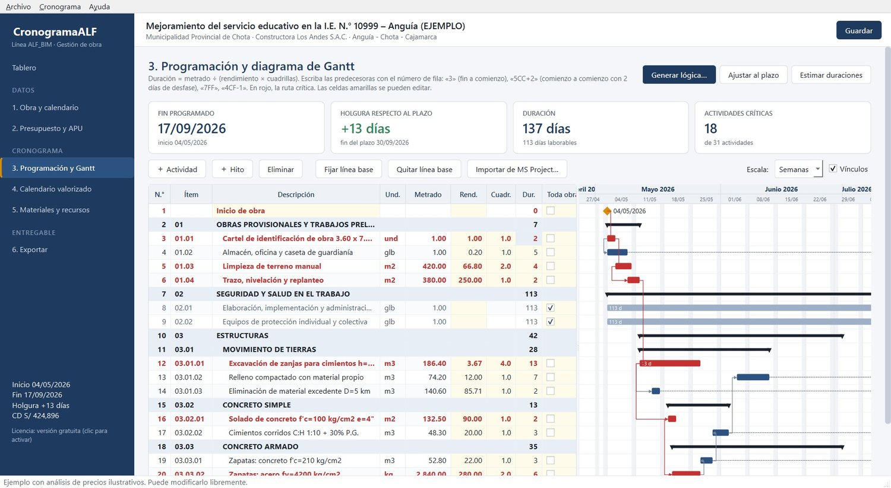
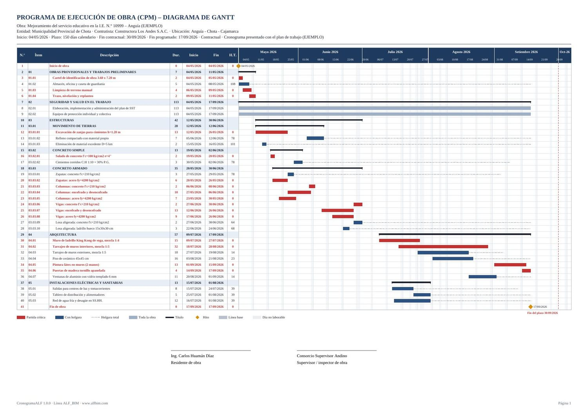
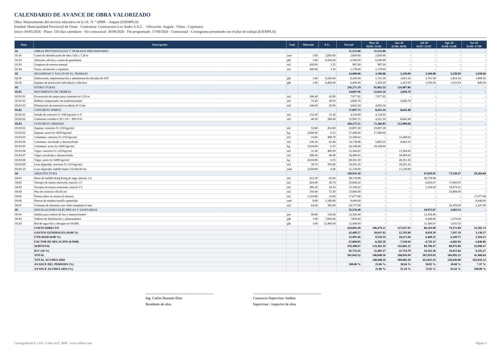
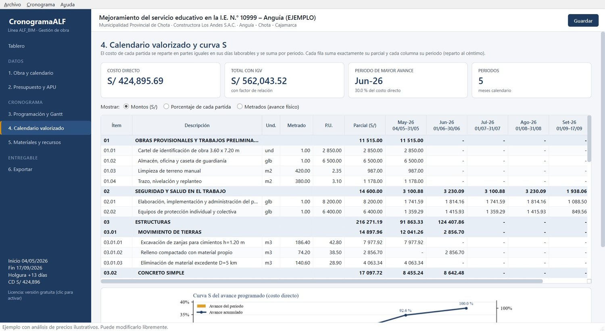
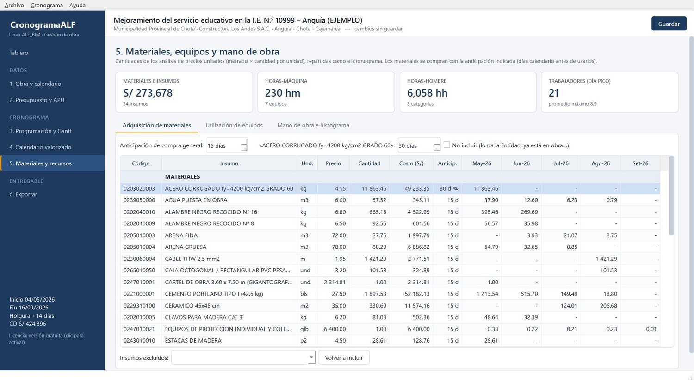
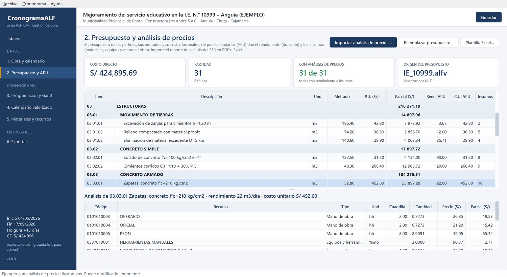
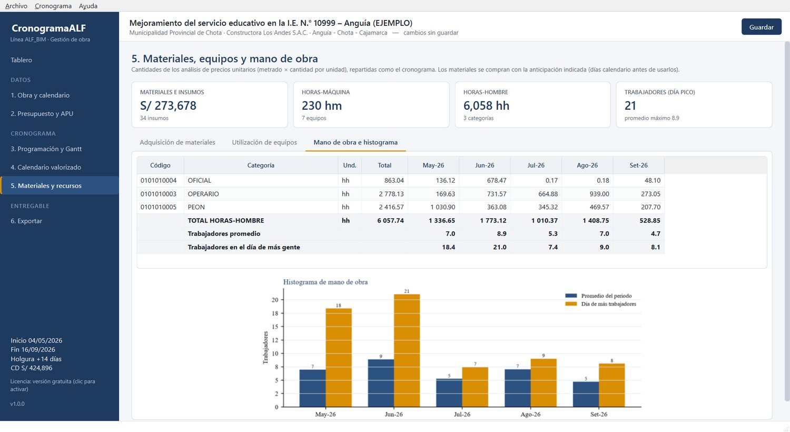

S/ 0para siempre
Todas las funciones
Las salidas llevan «VERSIÓN DE EVALUACIÓN»
- Cálculo completo en pantalla
- Ejemplos incluidos
- Sin fecha de vencimiento
CronogramaALF para Windows
CronogramaALF lee el presupuesto y los análisis de precios del S10 (PDF o Excel) y arma el programa de ejecución de obra: diagrama de Gantt con CPM, calendario de avance valorizado, curva S, calendario de adquisición de materiales, utilización de equipos e histograma de mano de obra. Exporta a Excel, PDF y MS Project.
Desde S/ 25 al mes. Versión gratuita con marca de agua.
Gratis con todas las funciones · Manual (PDF)

Qué hace
Importas el presupuesto y los análisis de precios unitarios. La duración sale del rendimiento, la lógica se arma como en MS Project y los calendarios se recalculan solos con cada cambio.
El presupuesto y los análisis de precios del expediente, en PDF o Excel.
Metrado ÷ (rendimiento × cuadrillas), en días laborables.
Vínculos FC, CC, FF y CF con desfase, escritos como en MS Project.
Días que se trabaja, feriados y paros de la obra.
Por meses calendario o tramos de 30 días, repartido al céntimo.
Cantidades de los APU, compradas con anticipación.
Horas-máquina, horas-hombre y número de trabajadores.
Para ampliaciones de plazo y calendarios acelerados.
Todo en Times New Roman, con las firmas del residente y del supervisor.
El resultado
El ejemplo que viene con el programa: una institución educativa de 31 partidas y S/ 424 896 de costo directo, 150 días de plazo desde el 04/05/2026, lunes a sábado con feriados. Termina el 17/09/2026, con 13 días de holgura.




Sin licencia, el Excel, el PDF y el XML llevan la marca «VERSIÓN DE EVALUACIÓN». El cálculo en pantalla es completo.
Cómo funciona
Elige el PDF o el Excel del presupuesto del S10 y el de los análisis de precios. Escribe la fecha de inicio y el plazo contractual.
La lógica automática encadena las partidas. Corrige predecesoras y cuadrillas como en MS Project: la ruta crítica y la holgura respecto al plazo se ven al instante.
Gantt, calendario valorizado, curva S, materiales, equipos y mano de obra en PDF y Excel, y el XML para MS Project.


MS Project
El XML se probó en MS Project 2021: las tareas llegan con su EDT, duración, vínculos, costo y el calendario de la obra, y terminan en la misma fecha que en CronogramaALF.
Tareas de resumen por título, EDT con el ítem del presupuesto, duración, vínculos FC/CC/FF/CF con su posposición, costo fijo prorrateado, notas con metrado y precio, y la línea base.
El calendario sale con los días laborables, la jornada de 8 horas y los feriados nacionales y días sin trabajo como excepciones.
Si ajustas el cronograma en MS Project, guárdalo como XML: CronogramaALF trae las duraciones y los vínculos cambiados y recalcula los calendarios.
Precios de lanzamiento
Descárgalo gratis y usa todas las funciones. Con la licencia, las memorias, los PDF y los Excel salen sin marca de agua. Pagas con Mercado Pago, Izipay o PayPal.
Todas las funciones
Las salidas llevan «VERSIÓN DE EVALUACIÓN»
≈ US$ 7.27 al mes
Precio de lanzamiento
Equivale a S/ 14.92 al mes
Ahorras 40 % frente al mensual
Presupuesto, cronograma, valorizaciones, plazos e informe mensual: los cinco programas de escritorio para la obra.
PlazosALF · InformeMensualALF · CronogramaALF · PresupuestoALF · ValorizacionesALF
Todos los programas de pago, incluidos los que salgan durante tu año de licencia.
AceroALF · MetradosALF · CadRevitALF · EtabsRevitALF · MemoriaEstructuralALF · CheckerALF · SanitariasALF · RedesInterioresALF · DotacionALF · SaneamientoRuralALF · ElectricasALF · MaximaDemandaALF · PresupuestoALF · CronogramaALF · ValorizacionesALF · PlazosALF · InformeMensualALF · Simulacion4DALF
Precios de lanzamiento en soles; se mantienen mientras renueves sin interrupción. Los montos en dólares son referenciales (S/ 3.44 por dólar). La licencia es por computadora: para activarla nos envías el ID de equipo que muestra el programa y te mandamos la clave apenas se acredite el pago. Revisa la política de reembolso y los términos y condiciones.
Preguntas frecuentes
No. CronogramaALF lee los reportes del S10 que vienen en el expediente técnico: el presupuesto y el análisis de precios unitarios, en PDF o exportados a Excel. Si no tienes esos reportes, usa la plantilla de Excel que trae el programa.
No. El Gantt, la ruta crítica y todos los calendarios se hacen en CronogramaALF. El XML es para quien quiere seguir trabajando el cronograma en MS Project.
Del rendimiento del análisis de precios: duración = metrado ÷ (rendimiento × número de cuadrillas), en días laborables. Puedes cambiar el rendimiento, las cuadrillas o fijar la duración a mano.
Sí. Fija la línea base, cambia el plazo o agrega la causal como actividad, y elige el tipo de cronograma «actualizado» (art. 206 del Reglamento de la Ley 32069) o «acelerado» (art. 207). El PDF y el Excel muestran la línea base para comparar.
Sí, en los dos sentidos. Puede crear el cronograma desde el archivo .alfv de ValorizacionesALF, y exporta el calendario valorizado en el formato que ValorizacionesALF importa.
Todo el programa. Sin licencia, el Excel, el PDF y el XML salen marcados como «VERSIÓN DE EVALUACIÓN». Con la licencia, que es por computadora, salen limpios.
Instalador para Windows 10 y 11 (64 bits). Trae el cronograma de ejemplo, su presupuesto y la plantilla de Excel para presupuesto y análisis de precios.
Versión 1.2.1 · 69 MB · SHA-256 EDEB2C893EAA1FC59E6829C898509BD53B8926C331CCC6B8F6D0AE656ACADF73